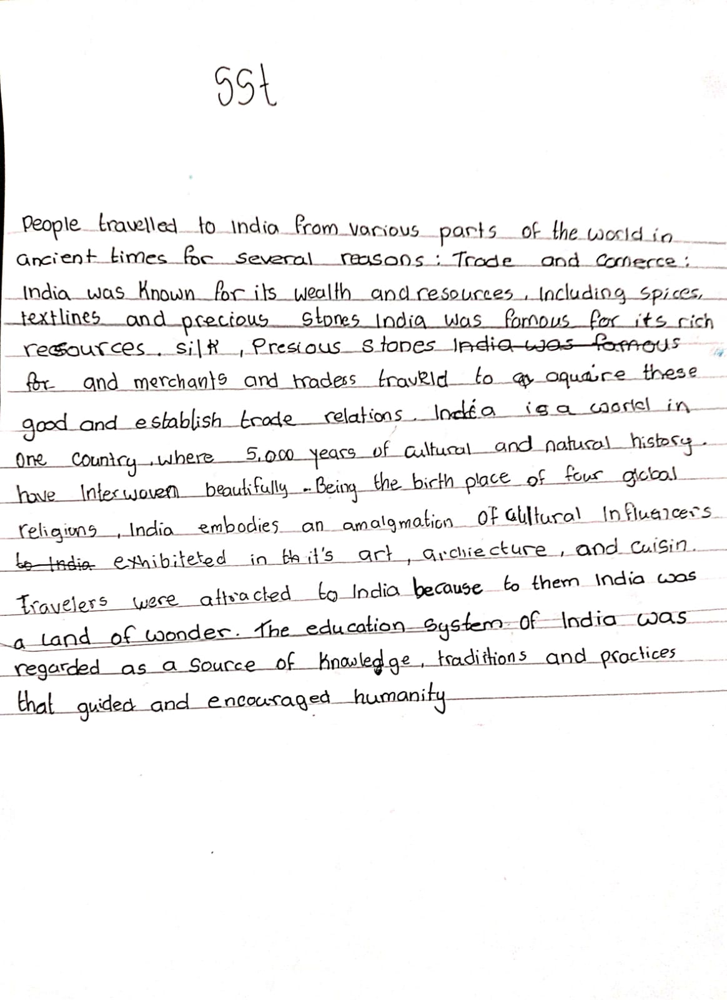
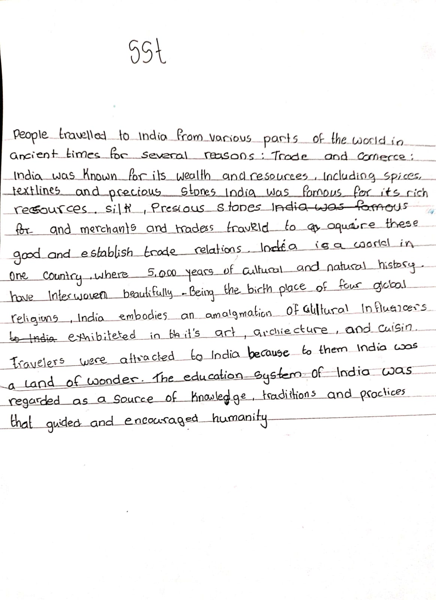

SST PAGE

Sst topic description:
Welcome to SST page
| SST PAGE |  |
|---|---|
| | |
| Sst topic description: |
People traveled to India from various parts of the world in ancient times for several reasons: Trade and Commerce: India was known for its wealth and resources, including spices, textiles, and precious stones. : India was famous for its rich resources, , silk, precious stones, and. Merchants and traders travelled to acquire these goods and establish trade relations. India is a world in one country, where 5,000 years of cultural and natural history have interwoven beautifully. Being the birthplace of four global religions,India embodies an amalgamation of cultural influences, exhibited in its art, architecture, and cuisin .Travelers were attracted to India because to them India was a land of wonder. The education system of India was regarded as a source of knowledge, traditions, and practices that guided and encouraged humanity. |